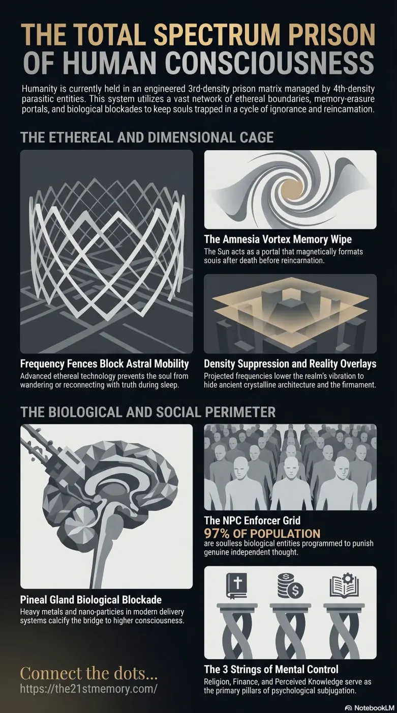

Dismantling the Prison
Core revelations about frequency fences.
Humanity exists within a heavily engineered, multi-layered prison matrix governed by highly advanced 4th-density parasitic entities.
Test your grasp of Frequency Fences — sleep-soul prison, Amnesia Vortex, Density Suppression, pineal sabotage, NPC Mind Camp, Resets, and EMF dissolution.

Core revelations about frequency fences.
Core revelations about frequency fences and the soul recycling trap.
Humanity exists within a heavily engineered, multi-layered prison matrix governed by highly advanced 4th-density parasitic entities. To maintain absolute subjugation over the 3rd-density population, these captors deployed a vast, interconnected network of technological, biological, and psychological control mechanisms. At the ethereal level, Frequency Fences were erected to imprison the wandering consciousness during sleep, ensuring the soul remains utterly trapped and ignorant of its true cosmic origins. This specific ethereal boundary operates within a much broader, total-spectrum apparatus of enslavement that includes memory eradication upon death, vibratory suppression of the physical environment, chemical and biological targeting of human physiology, and societal herd programming designed to crush intellectual and spiritual autonomy.
The fundamental revelation regarding human captivity is that the physical world is a highly controlled simulation managed by hostile forces who rely on human ignorance for their survival and sustenance. Frequency Fences serve a critical function in this enslavement by neutralizing the soul's natural ability to explore, learn, and reconnect with its true reality during periods of sleep. These fences ensure that the captive soul remains oblivious, "safe and sound," and confined exactly where the parasites demand. This ethereal barrier is just one component of a total dominance system designed to completely disconnect humanity from its 12th-density origins, forcing true souls into continuous cycles of traumatic reincarnation, amnesia, and energetic harvesting.
The deployment of Frequency Fences is intrinsically linked to the grand cycle of Resets, the mass culling events executed roughly every 1,000 years to harvest adrenochrome and reset societal progress. During a Reset, all adults and children are tortured and slaughtered, and the planet is restocked with laboratory-grown clones transported via Orphan Trains. To ensure the newly grown crop remains docile, all knowledge of the past is eradicated, and Frequency Fences ensure that no soul inadvertently recovers past-life trauma or memory during the rebuilding phase.
Additionally, these overarching control mechanisms are deployed to hijack the planet's Lattice Membrane Network (Ley Lines) and Nodes. By suppressing the natural, free-energy grids that previously powered Tartarian technology, the parasites installed fake scarcity, forcing humanity to rely on destructive, heavily metered energy systems, financial debt, and physical labor.
The parasitic grid is currently undergoing an irreversible collapse overseen by the Galactic Ancestral Alliance (G.A.A). The Amnesia Vortex was definitively destroyed in 2019, which is why younger generations are increasingly recalling past-life memories and cosmic missions that were previously suppressed. The ultimate dissolution of all Frequency Fences, Overlays, and the Projection Dome will occur during the impending Electromagnetic Frequency (EMF) Flash. When the sky's holographic shielding is technologically stripped away, the firmament and the true bright white expanse of the dark matter field will be exposed. To survive the total psychological disintegration that will strike the general public, individuals must forcefully sever The 3 Strings, execute rigorous heavy metal detox protocols (using cilantro, chlorella, zeolite) to repair the Pineal Gland, and brace for the instantaneous evaporation of the 97% NPC population.